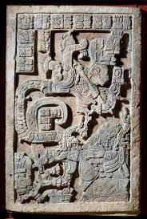

Yaxchilan. Chiapas, Mexico. Maya 725 CE Limestone.
Function
City set on a high terrace; plaza surrounded by important buildings
Flourished c. 300-800, ce
Structure 40
Form
Overlooks the main plaza
Three doors lead to a central room decorated with stucco
Roof remains nearly intact, with a large roof comb(ornamented stone tos on roofs)
Corbel arch interior
Patronage
Built by ruler Bird Jaguar IV for his son, who dedicated it to him
Lintel 25, Structure 23

Form and Content
The lintel was originally set above the central doorway of structure 23 as a part of a series of three lintels
Lady Xook(bottom right) invokes the Vision Serpent to commemorate her husband’s rise to the throne
The Vision Serpent has two heads: one has a warrior emerging from its mouth, and the other has Tlaloc, a war god
She holds a bowl with bloodletting ceremonial items: stinging spine and bloodstained paper; she runs a rope with thorns through her tongue
She burns paper on a dish as a gift to the netherworld
The depicted ritual was conducted to commemorate the accession of Shield Jaguar II to the throne
Function
Linetls intended to relay a message of the foundation of the site–there was a long pause in the building’s history
Shield Jaguar’s building program throughout the city may have been an attempt to reinforce his lineage and his right to rule
Context
The building is dedicated to Lady Xook, Shield Jaguars II’s wife
The inscription is written as a mirror image–extremely unusual among Mayan glyphs; uncertain meaning, perhaps indicating she had a vision from the other side of existence and she was acting as an intercessor or shaman
The inscription names the protagonist as Shield Jaguar II
Bloodletting is central to the Mayan life. When a member of the royal family sheds his or her blood, a portal to the netherworld is opened and gods and spirits enter the world
Theory
Some scholars suggest that the serpent on this lintel and elsewhere depicts an ancestral spirit or founder of the kingdom